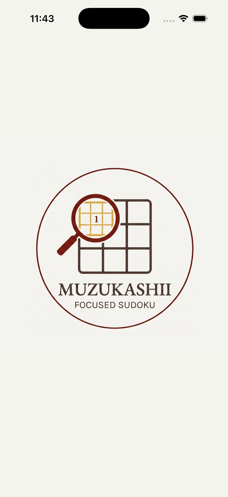
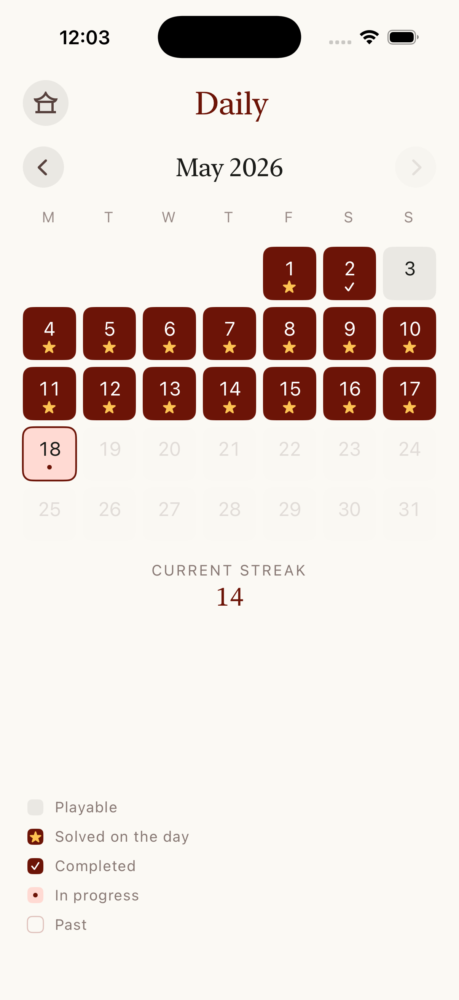
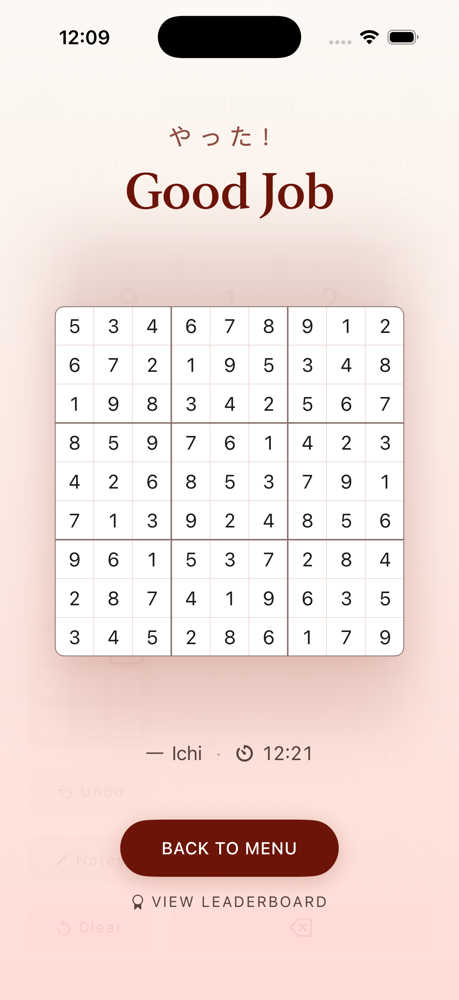

LEADERBOARDS
- Ichi · Ni · SanBest time per difficulty.
- Daily ChallengeOne puzzle a day, ranked against everyone.
- All-time PointsCumulative across every solve.
難しい · Muzukashii · "difficult"
A standard nine-by-nine board hides behind the screen. Only the three-by-three you're working on is visible — the rest live in your head. Swipe between boxes, or tap the mini-map to wander.




Ichi, Ni, San. Pick your tier and resume right where you stopped.
A new daily puzzle for everyone. Keep your streak alive with the calendar tracker.
Play freely. No timer, no records — just the board.
Add candidate digits to a cell. Placing a digit removes conflicting notes automatically.
Even unseen parts of the board respond — a red arrow points to a duplicate hidden in another box.
Washi paper, sumi ink, soft ambient music, and a page flip when switching regions.
Game Center
LEADERBOARDS
ACHIEVEMENTS · 11
♥ SUPPORTER EDITION
A voluntary one-time support for the game. The app stays fully playable without it — nothing behind the gate is required to solve a puzzle.
As a thank you, you get: